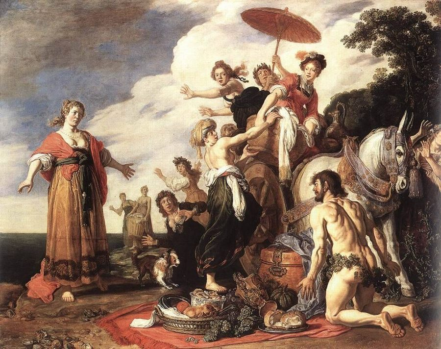
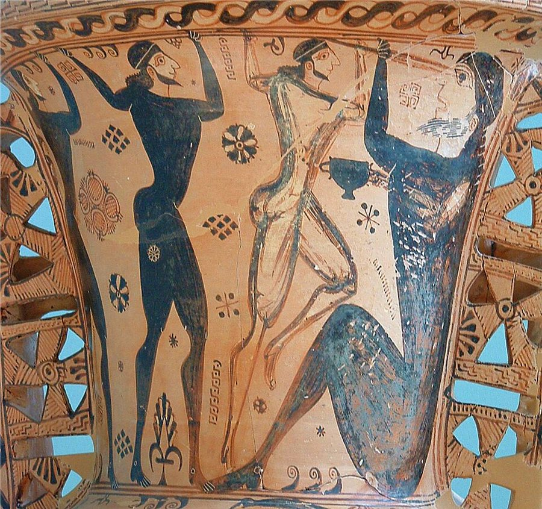
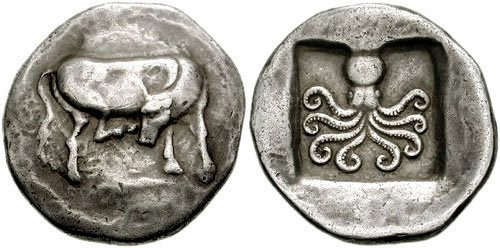
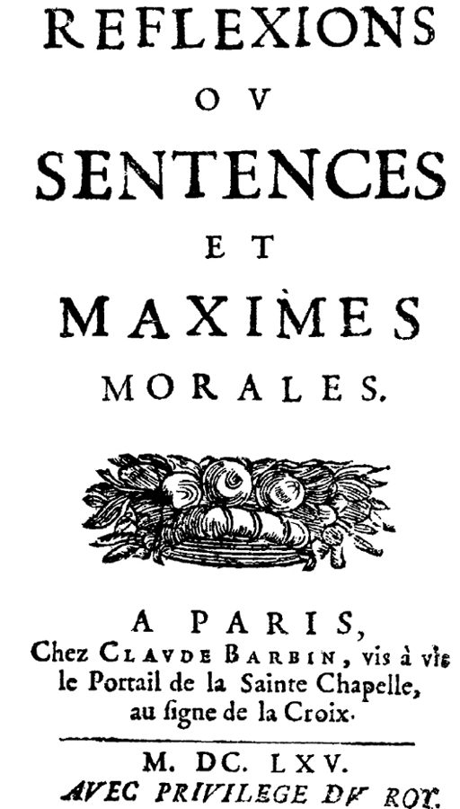
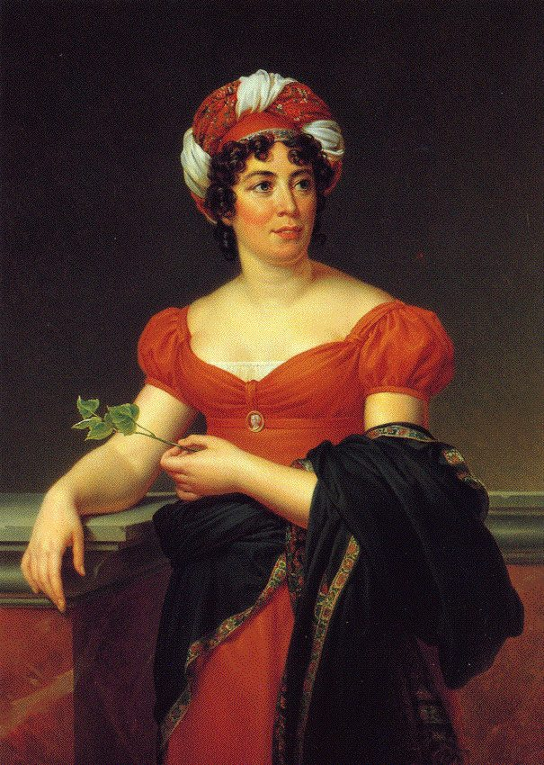

这一页在做什么
第 5 章一页读完，三节像三篇短文。第一节从《奥德赛》里的待客讲起：好客有个三天的期限，主人再大方也要算账；然后跳到 18 世纪，看好客怎样在旅行和贸易里消失。第二节从钱的起源讲到语言：钱是约定，词也像钱，用符号能省时间；再由普鲁塔克一路讲到法国古典主义的「少说」。第三节比法德两国说话、过日子的快慢。读的时候抓住一个词：经济，也就是「省」。

荷兰画家拉斯特曼（Pieter Lastman）1619 年画的奥德修斯和瑙西卡：右下跪着的是刚从海里爬上岸、身上只缠着枝叶的奥德修斯，左边站着的是公主，侍女们吓得四散。这是费埃克斯人待客的开头。Pieter Lastman，公有领域，维基共享资源 读之前：这一页在全书的哪里
上一页停在交易所：左拉笔下的银行家萨卡尔分秒必争，最怕来客说话太慢。这一章的章名是「有限时间的经济」，接的是第 1 章：那里作者说时间原则上是短的，所以要讲经济 ；对付「生命短、技艺长」的一条路，就是缩短技艺 。这一章把「省」落到两件日常的事上：待客的天数，说话的字数。三节之间作者没写过渡，只在第 27 段预告，普鲁塔克的一句话后面会一再出现。
待客的三天和说话的简短，凭什么放进同一章？作者说的「时间经济」，在钱、语言和文体里各是什么样子？
读的时候带着这几个问题。不用先找答案，读完回来对照「检查一下理解」。
三天的期限为什么说「不太严」？连最大方的主人也逃不过哪一条经济法则？§1
好客后来为什么消失了？作者用一句什么话概括原因？§1
从献祭的牛到纸币，作者数出的几个阶段，每一步省掉了什么？§2
德语真的让德国人说话慢吗？作者对斯塔尔夫人的判断信几分？§3
这一页的路线
三节之间没有过渡句。§1 先讲荷马笔下好客的两面：费埃克斯人和独眼巨人；第 10 段花饰之后一下跳过两千多年，到《百科全书》和克尼格，看好客怎样退场。§2 最容易读丢：第 15–24 段每引一句话就换一个人，从钱的起源讲到语言，再讲到时间，要盯住三个转弯：第 18 段钱是约定、语言也是，第 22 段符号省时间，第 24 段作者自己的小结。第 25 段花饰之后回到古代，由普鲁塔克的「小钱币」一路走到 17 世纪法国、三个德国人和纪德。§3 换成两个国家互看：先听德国人让·保尔说法语短，再跟法国人斯塔尔夫人看德国慢。读到 §2 会觉得「待客去哪了」：三节靠「时间要省」连在一起，不靠话题。
§1 待客
§2 钱和话
§3 快和慢
奥德赛
三天的期限
百科全书、克尼格
时间胜空间
钱是约定
昆体良到歌德
符号省时间
普鲁塔克
小钱币公式
拉罗什福科
古典即省
让·保尔
语言的快慢
斯塔尔夫人
本站示意图。上面一行蓝点是人和作品（拉罗什福科那一点包括后面的三个德国人和纪德），下面一行橙点是概念，折线是阅读顺序，虚线是原书的节界。§2 的前半在下面一行走得最多，那是作者自己的推论。 作者落在哪： 待客有三天的期限，说话讲究一个「省」。从钱币到词语，每一次替换都用更少的时间办成同样的事；法国古典主义可以看作这种时间经济的文学版本。至于法德两边过日子、说话、写作的快慢，他承认斯塔尔夫人大体看得不错，对她拿德语语法作解释却有保留。
分节地图
这一页是原书第 5 章，三节都在这里。粗体是这一节的主角；斜体是英文这一节开头的几个词，在电子书里搜它就能跳到那里；节里的转折用段号点出来。读完打个勾。
奥德修斯做客，克尼格先看钱包约 1800 词 When the shipwrecked Odysseus is washed … 第 3 段讲三天怎么数。第 10 段起跳到 18 世纪，看好客怎样消失。 从祭牛到纸币，从福基翁到纪德约 1900 词 When money was invented in Greece … 第 15–24 段钱、话、时间连成一串；第 25 段起是「少说」的谱系。 让·保尔和斯塔尔夫人：法德的快慢约 1200 词 The works of the German writer … 第 35 段起换成斯塔尔夫人的眼睛。第 41 段作者表态，留意限定词。
先用中文过一遍：这一页的概念
作者常常一笔带过、默认你懂的概念，这里先从书外讲一遍：它从哪来，是什么意思。它在这一页起什么作用，看每块最后一句。讲过的概念都汇总在概念汇总 。
§1 古希腊的待客之道 xenia（ξενία），guest-friendship 古希腊人把主客之间的关系叫 xenia。xenos 一个词同时是「陌生人」和「客人」：出现在家门口的外乡人，按规矩就该当客人招待。守护这套规矩的是宙斯，所以宙斯有个称号 Xenios（护佑外乡人的）。主人供吃住，先招待、后问来历，临别送礼；客人守礼，不赖着不走，日后主人到了他家也要回请。这种关系还能传给子孙。法国人类学家莫斯（Marcel Mauss）1925 年的《礼物》说，送礼看着是白给，背后却有「给、收、回礼」三重义务：它不像买卖那样当场两清，可总是要还的。
在这一页： 第 2 段讲 xenos 和宙斯，第 3 段讲三天的期限，第 7 段借莫斯说奥德修斯用故事回礼。
§2 货币的名目论和金属论 nominalism / metallism 一枚钱凭什么值钱？金属论（metallism）说：因为它本身是金子、银子，钱的价值就是金属的价值，铸上的印记只是替你称过了分量。名目论（nominalism）说：钱值多少，是法律和大家的约定定下的，面额写多少就值多少，材料无关紧要。两派在经济思想史上争了很久，德国经济学家克纳普（Georg Friedrich Knapp）1905 年的《货币国定论》是名目论一边的名著。今天的钞票、电子货币离开了金属，靠的就是名目论的道理。程序员可以这样想：值钱的是大家都认的接口约定，不是实现它的材料。
在这一页： 第 16–18 段，亚里士多德说钱（nomisma）来自约定（nomos），作者说这就是名目论，再接到「语言也是约定」。
§2 古典主义的「省」 classicism，classicisme 文学史上的「古典主义」，主要指 17 世纪法国路易十四时代的文学：高乃依、拉辛、莫里哀的戏剧，拉封丹的寓言，拉罗什福科的箴言，布瓦洛的《诗艺》（1674）是它的理论总结。它讲规则、分寸、清楚，反对此前巴洛克风格的繁复、铺张和奇巧的比喻。「古典」本指希腊罗马的典范，古典主义者自觉在学古人。德国说的「魏玛古典」（歌德、席勒）是 18 世纪末的另一回事，第 3 节斯塔尔夫人那里会碰到。古典主义的理想可以借纪德的话概括：用最少的话说出最多的意思，好比一段删掉了所有多余行的代码。
在这一页： 第 28–32 段，作者把这种「少」读成时间经济，拿普鲁塔克的「小钱币」公式贯穿到底。
§3 机智 Witz（wit） 德文 Witz 今天是「笑话」，在 18 世纪的德国美学里却是一种心智能力：在相隔很远的事物之间一下子看出相似，把它们连起来。英文 wit 原先也指才智，「说俏皮话」是后来的意思。和它相对的是「敏锐」（Scharfsinn），在相似的事物里看出差别。让·保尔在《美学入门》第 44 节里说，机智是一位乔装的神父，给每一对都证婚。机智离不开快：两件东西之间的那根线要读者一眼看到，解释半天就没味了，所以它和「短」绑在一起。
在这一页： 第 33–34 段，让·保尔说简短给机智开路；作者接着说，照他的看法，机智在莱茵河两岸分得不均也就不奇怪。
书里的人和作品
按在书里出现的顺序排，标题前是节号。作品只讲到读懂这一节需要的程度。
§1 费埃克斯人：荷马笔下最好的主人《奥德赛》（Odyssey）是荷马名下的史诗，讲奥德修斯在特洛伊战争之后漂泊十年回家。第 5 卷末他的木筏被风暴打碎，漂到费埃克斯人的斯刻里亚岛（Scheria）。第 6 卷公主瑙西卡（Nausicaa）在河口洗衣时遇见他，指点他去王宫；第 7、8 卷国王阿尔基诺奥斯（Alcinous）设宴、办比赛、请歌手唱歌；第 9–12 卷是奥德修斯在席上讲自己的经历；第 13 卷费埃克斯人用船把他送回伊塔卡。作者在注里把这八卷叫作一部讲好客的「论著」，拿它当好客的样板。第 6 段说的「追加预算」在第 13 卷开头：国王让十二位首领各再送一份重礼，再向百姓摊派收回来。
§1 独眼巨人：最坏的主人第 9 卷里，奥德修斯带十二个同伴进了独眼巨人波吕斐摩斯（Polyphemus）的山洞，被他用巨石堵在洞里。作者拿这段作好客的反面。书里说三天三夜、每夜吃两个；荷马原文是头一晚两个、次日清早两个、当晚又两个，就在那一夜巨人被灌醉、刺瞎，第二天早上众人藏在羊肚子底下逃出。书里说巨人「马上」问名字，原文里他一回洞先问「你们是谁」，问名字是在喝了酒以后。奥德修斯答「没有人」（Outis），巨人说，给客人的礼物就是最后一个吃他。

希腊厄琉西斯出土的一只陪葬大陶瓶的颈部，约公元前 7 世纪中叶：奥德修斯和同伴举着长杆刺瞎独眼巨人，巨人手里还拿着酒杯。Polyphemos Painter，CC BY-SA 3.0，维基共享资源 §1 《百科全书》和克尼格狄德罗和达朗贝尔主编的《百科全书》（Encyclopédie，1751–1772）是法国启蒙运动的总汇。「好客」（Hospitalité）一条在 1765 年出的第 8 卷，执笔的是若古骑士（Louis de Jaucourt），全书大约四分之一的条目出自他手。第 11 段英文、第 12 段法文是同一段话，法文没有变音符号，长按能查词。克尼格的《与人交往》（1788）在德国名气大到书名成了普通名词：今天德国人说「一本 Knigge」，就是指礼仪手册，虽然这本书原本谈的是怎样和各种人相处。书里写他生于 1751 年，一般记作 1752 年。第 7 章讲好奇心时还会引他。
克尼格 Adolph Freiherr Knigge，1752–1796 德国作家，男爵。第 13–14 段，他还劝人待客，可提醒主人先看看钱包，客人也别住过三天。
§2 钱和话：从劳姆到歌德第 15–23 段一口气点了六个人，每人只引一两句。劳姆的《神圣的钱》（1924）认为钱起源于神庙的献祭。亚里士多德那句在《尼各马可伦理学》第五卷讲交换的地方。昆体良那句话前面原本还有半句：「惯用法是说话最可靠的老师」，他的意思是用词要用通行的，像用盖着官印的钱，并不是劝人少说；「所以要像省钱一样省话」是作者往前推的一步。歌德说的纸币，是《浮士德》第二部第一幕梅菲斯特给皇帝印纸币那一场。拿时间比钱见时间就是金钱 ，这一节换成拿话比钱。

优卑亚岛埃雷特里亚约公元前 500–465 年的银币，正面一头母牛，背面一只章鱼。早期希腊钱币上常见牛；这一枚和书里说的献祭有没有关系，图片说明里没写。CNG，CC BY-SA 3.0，维基共享资源
劳姆 Bernhard Laum 德国经济史学者。第 15 段，他的假说：最早的钱是献祭用的牛的替身。
昆体良 Quintilian，约 35–约 100 罗马修辞学家，《雄辩术原理》的作者。第 19 段，话要像钱一样用。
培根 Francis Bacon，1561–1626 英国哲学家。第 20 段的话出自《学术的进展》（1605）。
莱布尼茨 Gottfried Wilhelm Leibniz，1646–1716 德国哲学家、数学家，著作多用拉丁文和法文。第 20–22 段那篇约写于 1697 年，死后 1717 年才印出。
§2 普鲁塔克笔下的福基翁普鲁塔克（约 46–约 120）是希腊作家，晚年在德尔斐当阿波罗的祭司。《希腊罗马名人传》（Parallel Lives）把一个希腊人和一个罗马人配成一对来写。书里说和福基翁配对的是老加图；通行本里和福基翁配对的其实是小加图（前 95–前 46），老加图配的是阿里斯提德。Rem tene, verba sequentur 倒确实是老加图的话，靠后世修辞书转引才留下来。福基翁（约前 402–前 318）是雅典将军和政治家，据普鲁塔克说四十五次当选将军，人称「好人」；晚年被雅典人判了死刑，喝毒芹汁而死。开会时琢磨讲稿还能删什么，也见《福基翁传》。
老加图 Cato the Elder，前 234–前 149 罗马政治家，以严厉守旧出名。第 25 段，「抓住事情，话自然会来」。
福基翁 Phocion，约前 402–前 318 雅典将军。第 26–27 段，脸冷、话少，普鲁塔克夸他的话像分量重的小钱币。
§2 法国古典主义：从拉罗什福科到纪德拉罗什福科的《箴言集》1665 年初版，定本五百来条短句，专拆人的自爱和虚荣。第 30 段引的两条是第 250 条和第 142 条；第 142 条后半句书里没引：小人物正相反，话说得多，什么也没说。尼采赞的是贺拉斯的颂诗，原文最后的评语是 vornehm（高贵、有气派），英译作 sublime。纪德那句话出自 1921 年的《致安杰尔的信》，是他接受《复兴》杂志采访之后写的评论，书里说成采访里的回答；整句是：法国古典主义整个趋向「曲言」（litote），是用最少的话说出最多的艺术。

拉罗什福科《箴言集》1665 年巴黎初版的书名页，书名全称是《反思，或道德的警句和箴言》。François de La Rochefoucauld，公有领域，维基共享资源
拉罗什福科 François de La Rochefoucauld，1613–1680 法国公爵、道德家。第 30 段，作者让他来回答「古典是不是时间经济」。
利希滕贝格 Georg Christoph Lichtenberg，1742–1799 德国物理学家、格言作家。第 31 段，他的笔记本叫《草稿本》。
叔本华 Arthur Schopenhauer，1788–1860 德国哲学家。第 31 段引的是《附录和补遗》（1851）里的《论写作和文风》。
尼采 Friedrich Nietzsche，1844–1900 德国哲学家。第 31 段引的是《偶像的黄昏》（1889）最后一章《我感谢古人什么》。
纪德 André Gide，1869–1951 法国小说家，1947 年获诺贝尔文学奖。第 32 段给古典主义下了定义。
§3 让·保尔和《美学入门》让·保尔（Jean Paul，本名 Johann Paul Friedrich Richter，1763–1825）是德国小说家，以离题万里、枝蔓横生的长篇出名，所以作者说他不是简短的榜样，还在「三卷」后面加了个惊叹号。《美学入门》1804 年初版三卷，1813 年再版，第 45 节叫「语言的简短」。他说简短是机智的「身体和灵魂」，让人想起《哈姆雷特》里波洛涅斯那句「简洁是机智的灵魂」，说这话的偏偏是全剧最啰嗦的人。第 33 段括号里的贺拉斯，指《诗艺》第 25–26 行：brevis esse laboro, obscurus fio，我力求简短，却变得晦涩。让·保尔说康德一派晦涩，不是这个原因。
§3 斯塔尔夫人和《论德国》斯塔尔夫人（1766–1817）是路易十六的财政总监内克尔（Necker）的女儿，从小在母亲的巴黎沙龙里长大，后来因为和拿破仑作对被逐出巴黎。1803 年底到 1804 年初她在魏玛见了歌德和席勒；席勒 1803 年 12 月 21 日给歌德写信说，要跟上她，得把自己整个变成听觉器官。施莱格尔是她 1804 年春在柏林结识的，此后长年给她的孩子当家庭教师。《论德国》1810 年在巴黎印好，被拿破仑下令查抄，1813 年才在伦敦出版。书里说她一句德语也不会；一般认为她后来学到了能读德文的程度。

热拉尔（François Gérard）画的斯塔尔夫人像。图片说明说，多半是她死后画的。François Gérard，公有领域，维基共享资源
斯塔尔夫人 Germaine de Staël，1766–1817 法国作家，生在巴黎的日内瓦家庭。第 35–41 段，用法国人的眼睛看德国的慢。
施莱格尔 August Wilhelm Schlegel，1767–1845 德国浪漫派批评家、莎士比亚的德译者。第 35 段，书里说她是读了他才对德国感兴趣。
茹贝尔 Joseph Joubert，1754–1824 法国道德家，以零碎的随想和格言留名。第 38 段，「简短的祖国」只在法国。
词与短语
你用 Kindle，单个生词长按就能查，这里只收词典帮不上的：每个词都认识、合起来不懂的说法，学术腔，没翻译的外文，典故。斜体小字是原句里连续的几个词，错字照电子书原样，搜它就能跳到那里。
§1 奥德修斯做客，克尼格先看钱包
be washed up
… Odysseus is washed up on an island …
（被浪）冲上岸
字面就是被海水冲上来。另有形容词 washed-up，是「完蛋了、过气了」，别混。
ho xenos
It suffices that he is ho …
（希腊文）那个外乡人、那位客人
ho 是冠词。一个词同时是「陌生人」和「客人」，见概念块「古希腊的待客之道」。
Zeus xenios
… host of all strangers (Zeus xenios).
（希腊文）护佑外乡人的宙斯
宙斯的称号之一，冒犯客人就是冒犯宙斯。第 9 段独眼巨人受罚，就是这层道理。
Not very.
… is this limit determined? Not very.
不怎么严
自问自答，省掉了 strictly：How strictly…? Not very (strictly)。后面接着说宽严之间可以差一两天。全书第一次碰到「期限从哪天数起」，第 8 章会专门讲
期限 。
take care of himself
… has to take care of himself.
自己顾自己，自谋出路
不是「保重身体」。过了期限，客人又变回陌生人，吃住都得自己想办法。
confer on
Alcinous confers on the stranger the status …
授予
confer 常见的意思是「商量」，confer A on B 却是「把 A 授予 B」。
extravagant quantity
… in adequate but in extravagant quantity.
多得过了头的分量
extravagant 是「超出常度的」，不一定是「奢侈浪费」。not only in adequate but in extravagant quantity：不只够，而且多得出格。
won’t hear of
… his hosts won't hear of such a …
坚决不答应
字面是「不肯听到」，意思是根本不同意。
can’t help being surprised
… we can't help being surprised that …
不由得感到惊讶
can’t help doing 是「忍不住、不由得」，和「帮忙」无关。
give in to
… in fact gives in to his host's …
拗不过，依了
give in 是让步。奥德修斯答应多住，国王高兴之余马上想到开销。
supplementary budget
… he creates a supplementary budget to …
追加预算
财政用语。作者故意拿现代政府的词套荷马的国王，是打趣，也是这一节的要点：好客也要算账。
a gift in return
… offers his hosts a gift in return-a …
回礼
return-a 中间其实是个破折号，后面是插入语：这种回礼在古代的待客法里很受看重。
no less than four full books
… these stories constitute no less than four …
足足四整卷
no less than 强调「多」，不是「不少于」那种干巴巴的下限。指《奥德赛》第 9–12 卷。
it seems to me
… Mauss, through which, it seems to me, …
在我看来
作者给自己的判断加的限定：好客和文学之间的原型关系，是他的看法，不是莫斯的话。
hostile counterpart
… as the latter's hostile counterpart.
敌意的那一面
the latter 指前面的 hospitality。hostile 和 hospitality 看着像一家：拉丁文 hostis 原指外人，后来指敌人；hospes 是主人或客人。作者用词时多半想到了这层。
peculiar gift
… the monster's peculiar gift to his …
古怪的礼物
peculiar 在这里是「怪的、别具一格的」，带反讽：所谓礼物，是最后一个被吃。
prove to be the undoing of
… proves to be the undoing of the …
结果毁了……
undoing 是「毁灭的原因」，不是「撤销」。
this non-name
Under the protection of this non-name …
这个不是名字的名字
希腊文 Outis，「没有人」。巨人被刺瞎后呼救说「没有人害我」，同伴就散了。
if valid at all, then only
… if valid at all, then only as …
即便还算数，也只是
德文式的让步结构（wenn überhaupt, dann nur）。好客今天顶多是个诗意的形象。
with lexicographical precision
… summed up with lexicographical precision.
像词典那样精确地
《百科全书》按字母排条目，作者说它把启蒙的知识和政治主张一条条「词典化」了。
bills of exchange
… money through bills of exchange, the …
汇票
法文 lettres de change。出门带一张汇票，到外地兑钱，不必再靠沿途主人接济。
the ongoing victory of time over space
… the ongoing victory of time over space …
时间对空间持续不断的胜利
作者对第 11 段那段话的概括：路好走了、车快了，距离不再挡人，要算的只剩时间。后面的 may also have caused 是推测，别读成定论。
does not go so far
… does not go so far in the …
没走到那一步
意思是克尼格没有像《百科全书》那样宣布好客已死。
haufenweise
… drive people in great numbers …
（德文）成群结队地
Haufen 是「堆」，字面是「一堆一堆地」，带点嫌弃。
consult his purse
… a man consults his purse before …
先掂量掂量钱包
consult 原是「请教」，请教钱包，就是看看自己出不出得起。
with the best will in the world
… with the best will in the world, …
再怎么有心
固定说法，后面总跟着「也做不到」。
abridged hospitality
… practicing this abridged hospitality to abide …
缩水版的好客
abridged 本来说书：abridged edition 是节本。用在好客上，就是打了折扣的待客。
A guest, like a fish, stinks on the third day
… like a fish, stinks on the third …
客人和鱼一样，到第三天就臭了
意大利谚语，括号里的意大利文有识别错字，见本节末。富兰克林的《穷理查历书》里也有类似的话：鱼和客人，三天就发臭。
读不通的扫描错字：
… L'ospite, como it pesce, puzza it terzo … 应为 L’ospite, come il pesce, puzza il terzo giorno（意大利文）。… Ein Fisch and ein Gast halten … and 应为德文 und（和）；后面的 Langer 是 länger（更久）。
§2 从祭牛到纸币，从福基翁到纪德
Heiliges Geld
… according to Bernhard Laum's hypothesis in …
（书名）《神圣的钱》
劳姆 1924 年的书，德文书名见第 5 章注 5。正文前面的 holy money 就是这个书名的英译。
placate the gods
… and to placate the gods by …
让神息怒
献上一个「有效的符号」代替真牛，这是这一节第一次替换。
pecunia / pecus
The Latin word pecunia (money), which …
（拉丁文）钱 / 牲畜
英文 pecuniary（金钱的）就从 pecunia 来。钱和牛同根，是劳姆假说的语言证据。
natural economy
… substitute for the natural economy.
实物经济
经济史术语，指以物易物、不用货币的经济，和「自然」「大自然」无关。
nomisma / nomos
… the word nomisma (coin), derives from …
（希腊文）钱币 / 约定、法律
见概念块「货币的名目论和金属论」。
a nominalistic rather than a metallistic theory
… a nominalistic rather than a metallistic …
名目论而不是金属论的货币理论
见概念块。作者接着说，古人对语言也有同样的看法：语言不是天然的，只是约定。
utendumque sermone ut nummo
(utendumque sermone ut nummo cui publica …
（拉丁文）用语言要像用钱一样
后半是「那种有公共印记的钱」。书里引时漏了原文的 plane（确实）。昆体良说的是用词要合通行的用法，「少说」是作者的引申，见上面「钱和话」一块。
set its stamp upon
… upon later periods can be shown …
给……打上烙印，深深影响
双关：stamp 也是钱币上的印记，接着上一段「盖着公印的钱」。作者加了引号，提醒你这里在玩字面。
tokens current
Words are the tokens current and …
通行的筹码
培根的句子：current 是「流通的」（currency 的同根词），放在名词后面，是旧式语序。token 是代币、筹码。
conceits
… accepted for conceits, as moneys are …
（旧义）观念、想法
今天 conceit 是「自负」，培根时代指心里的概念。整句：词是观念的通行筹码，正如钱是价值的筹码。
Unanticipated Thoughts
Thoughts Regarding the German Language …
（篇名）《粗浅的想法》
德文 Unvorgreifliche Gedanken，unvorgreiflich 是旧时公文里的谦辞：「不敢预先替人下断语」，近似「管见」。英译成 Unanticipated（没料到的），意思偏了。
bills or markers … pending
… bills or markers are given pending …
先给票据或筹码，等着最后结算
marker 在赌桌上是筹码、欠条；pending 作介词是「在……之前」。莱布尼茨说，脑子处理太多东西时也先用符号顶着，不必每次都想到实物。
repeat the historical transition
… Leibniz repeats the historical transition from …
在语言上重演那段历史转变
repeat 在这里不是「说第二遍」，是「照样再走一遍」：从实物到货币，到语言里就是从事物到符号。
Latin tag
… the Latin tag Verba valent sicut …
拉丁成语
tag 在这里是常被引用的套话，不是标签。Verba valent sicut nummi：话的价值和钱一样。
gloss
… immediately offers the following gloss: …
注解
不是「光泽」。中世纪抄本行间、页边的注释就叫 gloss。
accord
… since he accords paper money, in …
给予、认定
accord 作及物动词是「给予」。歌德只承认纸币有约定的效力。
semantic substitution
… can be understood as a semantic …
意义上的替换
语言学说法：一个符号顶替另一样东西去表示意思。作者的四个阶段，每一步都是这样一次顶替。
Rem tene, verba sequentur
(Rem tene, verba sequentur!) Time is …
（拉丁文）抓住事情，话自然会来
res 是事情、内容，verba 是词句。意思是想清楚要说什么，用不着修饰。后面 Time is too short… 是作者自己的话。
emptied the cup of hemlock
… he emptied the cup of hemlock.
喝下一杯毒芹汁
雅典处死犯人的方式，苏格拉底也是这样死的，所以前面说 Like Socrates。
like small coin of great value
Here Plutarch offers splendid praise of …
像面值小、分量重的钱币
前一句引的是普鲁塔克的英译。古代钱币按金属成色和重量算价值，小钱也可以很值钱。这就是作者说要一直记着的「公式」。
met with great response
… brevity that met with great response …
反响很大
德文 Resonanz finden 直译过来的说法，英文一般说 met with a great response 或 found wide resonance。
keep in view
… we will keep in view his …
一直记在心上
后面一句 encounter it many forms 漏了 in，是 encounter it in many forms。
This holds for no period … more than
This holds for no period of …
没有哪个时期比……更合用这话
否定加比较，意思是最高级：这话最适用于 17 世纪的法国。
abondance
(abondance) a defect and a violation …
（法文）丰赡，堆砌
本是好词（丰富），在古典主义者眼里成了毛病。
only another word for
… only another word for an economy …
不过是……的另一个名字
作者提问，自己不直接答，让拉罗什福科来答；从下面引的两条箴言看，他的答案是肯定的。
soldierly style
Van Delft called this the author's …
军人式的文风
原文是法文 style soldat（见注 13）：短促、干脆，像下命令。
Waste Books
In his Waste Books (Sudelbifcher) Lichtenberg, …
（书名）《草稿本》
Sudelbücher（电子书里错成 Sudelbifcher）。waste book 原是英国商人记流水账的草账本，利希滕贝格借来叫自己的笔记本，不是「废书」。
sublime par excellence
… in my view, sublime par excellence.
堪称崇高的典范
par excellence 是法文，「最典型的」。尼采德文原文这里是 vornehm（高贵、有气派），英译换成了 sublime。
confession
… Gide's confession of enduring classicism was …
表白，自陈立场
不是「忏悔」。纪德一直自认古典派，这一次公开说了出来，起因却只是一次采访（was trivial）。
读不通的扫描错字：
… a more convenient, timeand money-saving … 应为 time- and money-saving（省时又省钱的）。… (c. 46-c. 12o AD), … 应为约公元 46–约 120 年。… Phocion (397-18 BC) … 应为 397–318 BC；通行的说法是福基翁约生于公元前 402 年。… c'est fart d'exprimer le plus … fart 应为 l’art（艺术）。
§3 让·保尔和斯塔尔夫人：法德的快慢
a paragon of speed, acuity, and laconic conciseness
… as a paragon of speed, acuity, …
快捷、犀利、言简意赅的典范
laconic 的来历见
01a ：斯巴达人说话短。作者说让·保尔从来不算这种典范，是反话的起头。
three-volume (!)
Yet in his three-volume (!) Propaedeutic …
三卷本（！）
括号里的惊叹号是作者的揶揄：讲「简短」的书，自己有三卷。
Propaedeutic to Aesthetics
… Propaedeutic to Aesthetics (Vorschule der Asthetik, …
（书名）《美学入门》
德文 Vorschule der Ästhetik，Vorschule 字面是「预科」。propaedeutic 是「入门的、预备性的」。
body and soul of wit
… he writes, and he finds this …
简短是机智的身体和灵魂
wit 见概念块「机智」。这句让人想起《哈姆雷特》第二幕波洛涅斯的 Brevity is the soul of wit。
lex minimi
… most clearly exemplified in Greece among …
（拉丁文）最少之律
「用最少」这条法则，和第 1 章说的经济法则（最少的手段、最大的效果）是一个意思。
had better be translated into French
… had better be translated into French, …
最好译成法文（才读得懂）
让·保尔的挖苦：德国哲学的德文原文太绕，翻成法文反而清楚。
(Horace!)
… not through their brevity (Horace!), …
（想想贺拉斯！）
作者插的一声提醒：贺拉斯说过「我力求简短，却变得晦涩」，太短也会晦涩。让·保尔说康德派晦涩不是因为短，是因为重复。见上面「让·保尔」一块。
durch ihr Verdoppeln
(or as Jean Paul puts it, …
（德文）靠他们的翻来覆去
Verdoppeln 是「加倍」，指同一个意思说两遍。后面粘着的 i6 是注号 16。
on the two sides of the Rhine
… on the two sides of the Rhine.
莱茵河两岸，也就是法国和德国
固定的修辞，这一节反复用（the other side of the Rhine）。
in the van of
In the van of this movement …
走在……的最前列
van 是 vanguard（先锋）的缩写，不是货车。
in French, naturally
… Schiller-in French, naturally, for she …
当然是用法语
naturally 带一点揶揄：她一句德语也不会，只能别人迁就她。Schiller-in 中间是破折号。
a country of poets and thinkers
… a country of poets and thinkers …
诗人和思想家的国度
德国人的老说法 Land der Dichter und Denker，常被拿来自夸，也常被反讽。
vivre vite
… knew how to live quickly (vivre …
（法文）活得快
对面是德国人的 une rêverie calme（平静的梦想）和 il ne se presse jamais（从不着急）。
lenteur / inertie
… characteristics of German slowness (lenteur) and …
（法文）迟缓 / 惰性
后面的插入语说：这是她的感受，而她对德国什么都往好处想，所以慢在她笔下反倒成了深沉。
elixir of life
… missed terribly her Parisian elixir of …
命根子
字面是炼金术里的长生药。对她来说，巴黎的谈话就是活下去的养分。
linguistic intercourse
… linguistic intercourse among Germans, and …
用语言打交道，交谈
intercourse 的旧义是「交往」，今天多指性交，所以读着别扭。这里只是交谈。
le talent d’abreger
(le talent d'abreger). In making this …
（法文）把话说短的本事
abréger 是「缩短、节略」，英文 abridge 同源。
she may have been recalling
… she may have been recalling her …
她也许想起了
作者的猜测，带 may。茹贝尔那句是不是她的来源，书里没有定论。
longueurs
… all longueurs are banned, since …
（法文借词）拖沓冗长之处
英文照搬的法文词，专指书、戏、谈话里冗长乏味的段落，不是「长度」。
placement of the verb at the end
(placement of the verb at the …
动词放在从句末尾
德语从句的语序：动词要等到最后才出现，句子不说完听不出意思，插话也就难插。括号里的惊叹号是作者的口气。
more or less correctly
… judged more or less correctly the …
大体正确地
作者的保留：前面先说「也许对，也许不对」，这里只给个「大体」，最后括号里对今天是否还如此也不置可否。
读不通的扫描错字：
… le temps marche ld plus lentement … ld 应为 là（那里）。… la patrie de In brievete … In 应为 la：la patrie de la brièveté，简短的祖国。
读完：作者到底说了什么
读完这一页的几节再看。下面是作者在这几节里的论点，由本站按论点重新组织，不按原书的顺序；每条右上角是依据所在的段落，拿不准就回书里那几段再读一遍。
好客有三天的期限，时间战胜空间之后它就退场了 作者说古代的好客有三天的界限，怎么数到达日和离开日，可以宽出一两天；最慷慨的费埃克斯国王也要百姓分摊开销。18 世纪下半叶起，旅行和贸易取代了它，作者概括为时间对空间的胜利，说这也可能让好客慢慢消失。
§1 第 3、6、13 段 客人用故事回礼，好客和文学从此相连 奥德修斯收下主人的礼物，回赠的是四卷书长的故事。作者说这不是按经济规则的交换，而是莫斯说的那种礼物交换；在他看来（it seems to me），好客和文学的原型关系就在这里立下，影响了后来的历史。
§1 第 7 段 钱和词都是省时间的替代品 亚里士多德说钱靠约定，作者说这是名目论，古人对语言也这样看。莱布尼茨说符号让人不必每回从头想，作者归结为用符号省时间。从献祭的牛到印牛的钱、约定的印记，再到词语（又为纸币开路），每一步都用更少的时间达到相同或相近的目的。
§2 第 18、22、24 段 古典主义就是说话的时间经济 普鲁塔克夸福基翁的话像分量重的小钱币。作者说 17 世纪的法国古典主义用「少」取代巴洛克的「多」，把冗余看成浪费时间；他问古典原则是不是时间经济的别名，让拉罗什福科来答；从他引的两条箴言看，答案是肯定的。
§2 第 27、28、30 段 语言有快慢，斯塔尔夫人只是大体看对了 让·保尔说法语天生简短，德语什么都拉长；斯塔尔夫人把德国人谈话拖沓归到动词放句尾。作者先说「也许对，也许不对」，又指出她不懂德语；最后才承认她对两岸与时间的关系判断得大体不错，今天还是不是这样，他不置可否。
§3 第 34、40、41 段
合起来： 这一章把第 1 章说的时间经济落到两件日常的事上：待客要数天数，说话要省字数。钱、词、文体都可以看成省时间的发明；作者在第 2 节末尾自己也用一句短话收尾，算是现身说法。
值得停下来的句子
We have nothing time-consuming to add.— §2 第 32 段。本站译：我们没有什么费时间的话要补充了。
第 2 节的最后一句，紧跟在纪德「用最少的话说出最多」之后。作者不评、不总结，一句话收住，自己照着古典主义的规矩做了一回。time-consuming 用得巧：他不说 nothing to add，偏说没有「费时间」的话要补，把整章的主题塞进一个形容词里。
Perhaps, or perhaps not, but one wonders from what sources she derived her knowledge of the language, since she did not know any German.— §3 第 41 段。本站译：也许对，也许不对；不过人们不免要问，她对这门语言的了解是从哪里来的，因为她根本不懂德语。
先用 Perhaps, or perhaps not 把判断悬起来，再用 one wonders（不免要问）客气地表示怀疑，最后 since 一句点出要害。作者是研究语言的德国人，对一位不懂德语的法国人谈德语句法，口气礼貌，分寸很紧。读这一段要留意他一层层的限定，别把他读成完全赞同斯塔尔夫人。
检查一下理解
先在心里答，再点开。答错的那题，回书里把对应那一节再读一遍。
1.（§1）三天的期限为什么说「不太严」？ 要看到达日和离开日算不算。两头都算，中间只隔一天；大方的主人不算其中一头或两头，客人就能多住一两天。过了这个界限，客人重新成了陌生人。
2.（§1）费埃克斯国王留客多住，作者凭什么说经济法则照样成立？ 奥德修斯答应多住，国王高兴，却马上想到开销太大、一人担不起，要百姓分摊。作者打趣说，这相当于做了一份追加预算。
3.（§1）奥德修斯怎样「回报」主人？作者为什么说这不是买卖？ 他讲了自己从特洛伊陷落到漂来这里的经历，占了四卷书。这是礼物换礼物，像莫斯讲的礼物交换，不按市场规则算账。作者认为好客和文学的关系就从这里开始。
4.（§1）《百科全书》说好客在欧洲消失了，原因是什么？ 人人都在旅行、做生意：汇票、安全的道路、驿车和船、各地的旅店，取代了古人的接济。作者把这概括为时间对空间的胜利。
5.（§2）作者数出的几个阶段是什么？每一步有什么共同点？ 献祭的牛 → 印着牛的钱币 → 只凭约定的印记 → 语言的词（又为纸币开了路）。每一步都是一次替换，花费更少，用更少的时间达到同样或相近的目的。
6.（§2）普鲁塔克怎样夸福基翁？作者拿这句话做什么？ 说他的话像面值小、分量重的钱币，价值不在多而在实。作者把它当一个「公式」，用来读 17 世纪法国古典主义，以及后来的德国作家和纪德。
7.（§3）斯塔尔夫人把德国人谈话慢归到什么上？作者信她几分？ 归到德语的语法：从句里动词放在最后，句子就长。作者说也许对也许不对，还提醒她不懂德语；只承认她对两国时间节奏的总体判断大体不错。
用一句话说这一页，写给一个没读过的人。
想一想：你最近写的一条长消息、一份长文档，删掉一半会不会更好？反过来，有没有哪一次为了省字，让读的人多花了时间去猜，像贺拉斯说的「力求简短，却变得晦涩」？你心里的「三天」是什么：一个请求、一封邮件，多久不回就算失礼？
精彩回顾
读过又忘了，从这里想起来。挑的是这一页最值得记住的人、说法和比喻，不按原书顺序；每条后面是节号，想细看就回书里那一节。全书各页的这一节都收在全书回顾 。
一句话： 好客有三天的期限，说话讲究「省」：作者把钱、词和古典主义的文体都读成用更少时间办成同样事情的时间经济。
客人和鱼，三天就臭 古代的好客有三天的界限，怎么数到达日和离开日能宽出一两天。意大利谚语说得更粗：客人和鱼一样，第三天就臭了。
§1 拿故事回礼 奥德修斯在费埃克斯人那里讲了四卷书长的经历，作为回礼。作者认为好客和文学的原型关系就在这里立下。
§1 时间战胜空间 汇票、好走的路、驿车和旅店，让 18 世纪的欧洲人不再需要主人接济。作者说，古老的好客可能就这样慢慢退场了。
§1 从祭牛到纸币 钱起初是献祭的牛的替身，后来只凭约定；词像钱，符号让人不必每回重想。每一次替换，都用更少的时间办成同样的事。
§2 小钱币，大分量 普鲁塔克夸福基翁的话像分量重的小钱币。到 17 世纪的法国，这成了古典主义的理想：用最少的话说出最多的意思。
§2 变成一只耳朵 斯塔尔夫人在魏玛说法语说得飞快，席勒抱怨要整个变成听觉器官才跟得上。她却嫌德国人说话太慢，归罪于动词放在句尾。
§3